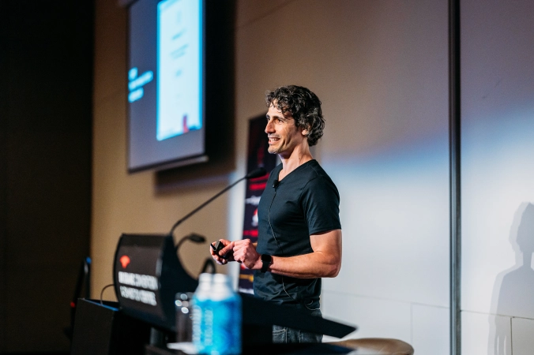

Build professional Data & AI solutions
without blowing your budget
As a startup founder, your time is precious. Your resources are limited.
Maybe you recently raised a round, but your runway isn't going to last forever.
You know that you should use a modern data stack and adopt AI solutions to stay ahead of the competition.
But you also know that hiring the wrong people is going to cost you time and money.
Get it wrong, and you will not hit your next milestones.
But maybe you do need to hire...
...a data engineer?
...a machine learning engineer?
...a data scientist?
...a prompt engineer?
...an AI scientist?
What's the difference anyway?!
Maybe all you need is a Fractional CDO?

Yes! Get on the path to Data & AI success with a seasoned Chief Data Officer, all for a fraction of the cost of a full-time data employee.
Choose a Fractional CDO Package to quickly access my extensive expertise in Data & AI, as well as almost two decades of experience in the tech & startup sectors.
| Elevate | Accelerate | Transform | |
|---|---|---|---|
| Monthly strategy call | ✓ | ✓ | ✓ |
| Unlimited email questions | ✓ | ✓ | ✓ |
| Help over Slack | - | ✓ | ✓ |
| Fortnightly office hours | - | ✓ | ✓ |
| Code and architecture reviews | - | - | ✓ |
| Recruitment help | - | - | ✓ |
| Monthly price (AUD ex. GST) | $5,000 | $10,000 | $15,000 |
| * additional services and equity-based remuneration are negotiable based on your needs | |||
A: I'm Yanir Seroussi. You can learn about my work history on my About page and LinkedIn. If you like credentials, I can tell you that I have a BSc in computer science and a PhD in applied AI from top universities. If you like name-dropping, I can tell you that I started my career in software engineering roles with Intel, Qualcomm, and Google. I became a full-stack data scientist in 2012, and have worked with multiple startups in Data & AI leadership roles (e.g., as Head of Data Science at Car Next Door – now Uber Carshare). I also spent 4.5 years at Automattic building machine learning, analytics, and causal inference solutions that focused on increasing profits from the company's flagship product: WordPress.com.
In recent years, I've switched my full-time focus to work I consider to have a net-positive impact, especially around climate and biodiversity. This has included hands-on Data & AI leadership work with Orkestra (a renewable energy startup), as well as with the Work on Climate and Reef Life Survey nonprofits.
The Fractional CDO offering is a way for me to help multiple positive-impact startups achieve their goals faster.
A: Funded Australian positive-impact startups that don't have their own CDO.
If you don't quite fit my ideal client rubric, e.g., if you're not in Australia or if you run a non-profit, please feel free to still get in touch.
If your focus is on profit generation with little regard to negative externalities, it's unlikely to work out between us.
A: You could say it's a test. I believe that robust async communication is key to modern remote-first startups. If your company is heavily reliant on meetings, it's unlikely to be a fit.
A: Monthly in advance. If there's a fit, I'll invoice you for the first month. We'll start working together once payment is received.
A: You may cancel for a full refund within the first two weeks of our engagement.
After that, you may cancel any time before the next billing period, and you won't be sent the next bill.
This goes both ways: If things don't work out, I'll wrap up my work for the period you've been billed, and notify you of termination at least a week before the next billing period.
A: Yes, I do. I strive to communicate my availability well ahead of time. You won't be billed for periods when I'm unavailable.
A: Maybe. Use the booking form, and include a note stating what you're after.
Alternatively, you can book a paid call.
A: You can send them through the booking form.